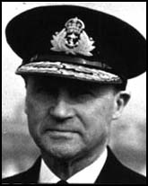
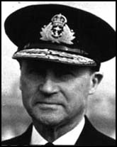
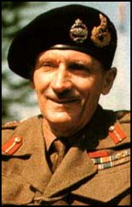
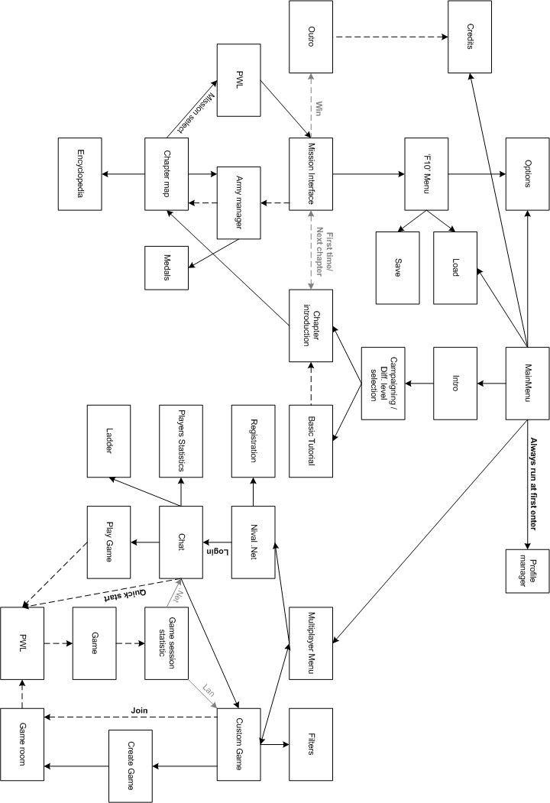
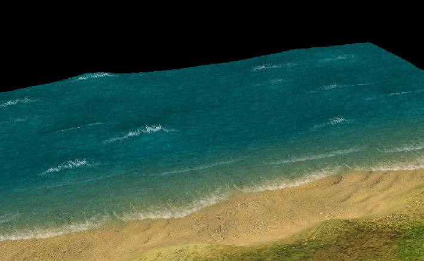

Graphics
Assets
Management
By Alexander Valencia
21 мая 2003
1.5. Comparison with another mainstream RTS
2.4. Player army & Reinforcements
2.5. Experience & Mission awards.
3.3.1. Система звукового
обнаружения:
3.5.1. Специальные виды
повреждений
3.6.1. Поражение пехоты внутри
здания
3.6.3. Поражение пехоты на
броне
3.9. Система повышения квалификации:
3.10
3.11
5.1.
General Style of the
game
5.5.
Objects (trees bushes
etc)
7.2.
Recommended
configuration
7.3.
Expected Performance and
Scene Complexity
8.1.
Deathmatch - Standard
Mode
Real time! Blitzkrieg II как и оригинальный Blitzkrieg является стратегией в реальном времени и наследует из оригинальной игры все лучшие качества, такие как: Real strategy! В отличие от своего предшественника Blitzkrieg II позволяет не только руководить войсками решая тактические задачи, но и предоставляет игроку возможность выбирать когда и какое подкрепление он хочет получить. Это зависит не только от действий игрока в самой миссии, как например, удержание железнодорожной станции, но и от успехов в предыдущих миссиях этой операции. Например, после выполнения миссии по уничтожению вражеского аэродрома, во всех остальных миссиях данной операции противник практически полностью лишиться авиации. Теперь игрок сам может выбирать, бросить все свои войска в прорыв и лишить противника коммуникаций, или организовав укрепленный плацдарм отбивать атаки противника и постепенно с помощью подкреплений отобрать у неприятеля все важные точки. Причем этот важный выбор игрок может совершать не только на тактическом уровне миссии, но и на стратегическом уровне всей операции. Real leaders! В Blitzkrieg II игрок может руководить не только обычными регулярными войсками но и реально существовавшими героическими личностями второй мировой - лидерами, такими как Wittman, Romel, Zaitcev, а так же известными именными подразделениями, такими как Feldhernhalle, 78 Sturmdivision, USA 101, 82 airborn divisions. Лидеры могут как поступать в распоряжение игрока на миссию или даже всю операцию, так и действовать самостоятельно, помочь в критический момент, наоборот просить о помощи, или предложить провести совместную операцию. При этом не стоит забывать что противник тоже располагает в составе своей армии прославленными лидерами - талантливыми офицерами и генералами, с которыми игроку будет не так легко справиться. Особенности игрового процесса. Стратегическая часть. Игрок может выбрать любую из доступных ему миссий на «chapter map». Про каждую миссию известно: Задание, Основные преимущества противника, преимущества игрока. В общем случае список может меняться в зависимости от того как игрок выполнял предыдущие миссии. Игрок может модифицировать отряд с которым он появиться на выбранной миссии, по умолчанию игрок идёт с теми войсками с которыми начинал предыдущую миссию. Некоторые миссии могут накладывать ограничения на используемые юниты, в этом случае запрещенные войска просто не появляются в миссии. Не все миссии одной главы могут быть открыты сразу, некоторые могут открываться по выполнении определённых заданий в других миссиях. Тактическая часть. Для того что бы увеличить количество «интересных выборов» которые делает игрок во время игры, для него вводиться интерфейсная возможность выбирать какое именно подкрепление он хочет получить. У игрока всегда есть возможность вызывать отряды из тех юнитов, которые ему доступны. Однако эта возможность имеет некоторое время «рецикла», кроме того на вызов подкрепления, тоже уходит некоторое время. Для разных отрядов юнитов это время может быть разным. Кроме того на карте миссии могут находиться некоторые ключевые точки, например железнодорожная станция, захват и удержание которой увеличивает скорость прибытия сухопутных войск, кроме того они появляются не на краю карты, а непосредственно из станции. Лидеры. Функционально это более продвинутые, уникальные и внешне выделяющиеся юниты как в Старкрафте. Возможно им удастся сделать интересные игровые возможности, при этом не жертвуя «реализмом». Например, Гастелло умеет сбивать вражеские самолёты срезая им хвосты винтом :) Обычно лидеры как то будут связанны с заданиями на миссию и их смерть приводит к провалу миссии. Как правило лидеры появляются на одну-две главы, в тех операциях где они реально принимали участие. Набор опыта, улучшение армии. Армия игрока состоит не из конкретных единиц техники, а характеризуется набором доступных типов. Например игрок не имеет 3 танка Т-34 как это было в B1, вместо этого он просто имеет доступ к Т-34 и может включать их в состав своей армии. Это нужно для того что бы игрок не экономил свои войска(не было бы частого Save/Load) и мыслил более стратегично, таким образом у игрока понижается цена ошибки, всегда можно вызвать новое подкрепление. Все юниты в ходе миссии набирают опыт как и в B1, однако, теперь нет конкретных экземпляров техники, которые переносятся в другие миссии. Поэтому теперь схема такая: юниты получают опыт который кроме локального влияния на этот юнит до конца миссии, влияет ещё и на базовый уровень опыта вновь прибывшей техники того же типа. Кривая обучения. В каждой кампании 5 глав (операций). Все виды юнитов разбиты на группы по предназначению. Игроку они становятся доступны постепенно по всему ходу игры. В тех случаях если данный вид юнитов по историческим соображениям обязательно должен присутствовать в этой операции, но это не подходит для нашей кривой обучения, то эти юниты участвуют в миссиях под контролем AI, обычно это будет обыгрываться «заданиями», например, «уничтожьте все AA guns противника, тогда прилетят наши мощные бомбардировщики...». По всем 5 главам, каждой кампании будет прослеживаться общая кривая обучения: Глава 1. Две, три линейно связанных миссии. После второй миссии можно модифицировать свой отряд. В последней миссии появляются подкрепления. Глава 2. Две линейный миссии с возможностью пройти одну дополнительную. Прохождение дополнительной миссий ослабляет врага, и даёт нам дополнительную технику. Глава 3. Пять миссий, из которых одна – «финальная» становиться доступной после прохождения двух любых. В миссиях появляется возможность выбирать подкрепления. Глава 4. Полномасштабная операция, всего 7 миссий со сложными взаимосвязями. Глава 5. Две маленьких миссии и одна большая.
Использование всех видов техники.Real Time! Real Strategy! Real Leaders!
Реализм Блицкрига предполагается улучшить и дополнить. Предлагаются следующие нововведения.
Игрок перешел в четвертую главу, и ему доступны все игровые возможности. Он видит экран главы – предстоящей операции. На нем изображена крупная карта местности, на которой изображены доступные миссии. Кликая по ним игрок просматривает краткое описание задания, а также оперативную информацию о районе действий, которая включает: ограничение по используемым войскам, преимущества противника и игрока, кроме того, указывается сложность данной миссии, а так же «бонус» который получит игрок. Одна из миссий на экране мигает, привлекает внимание, игрок уже знает, что это рекомендованная миссия, обычно самая простая. Но игрок уже уверен в своих силах, и просмотрев оперативную информацию, по всем предлагаемым миссиям, замечает, что во всех из них указанно преимущество противника в воздухе, поэтому игрок выбирает миссию по прорыву к вражескому аэродрому и его разгрому. Как «бонус» данной миссии указанно, что после её выполнения во всех остальных миссиях этой главы поддержка противника с воздуха будет минимальна. Решив выполнять эту миссию, игрок, зная, что ему придется штурмовать хорошо охраняемый аэродром, решает немного изменить состав войск, с которыми он появиться на миссии. Для этого он заходит в специальный экран и убирает несколько лёгких танков и отрядов пехоты, заменяя их на AA guns, истребители и штурмовых сапёров. Общая сила армии под управлением игрока ограничена согласно его званиею. Кроме того, за предыдущие успехи у игрока имеется возможность один раз воспользоваться услугами именного асса специализирующегося в уничтожении авиации противника, но игрок хочет приберечь его на финал игры и поэтому не включает его в начальный состав своих войск. Определившись с начальной армией игрок попадает в миссию. На карте действий расположена река, и за ней укреплённый аэродром противника. Войска игрока находятся на другой стороне реки, недалеко от него так же имеется небольшая железнодорожная станция. В первую очередь игрок решает захватить её, так как знает из описаний миссионных задач, что это поможет ему с доставкой подкреплений. Послав к станции разведчиков он обнаруживает, что основной проблемой при атаке будут явятся окопанные пушки, простреливающие единственную дорогу по которой его танки могут приблизиться к станции. Остальные подходы к станции закрыты поросшими лесом холмами. Стараясь не выдать себя противнику раньше времени, игрок отделяет от своих войск отряд егерей которые не имеют ограничений по зрению при действиях в лесу и посылает их через один из этих холмов. После этого он начинает атаку станции основными танковыми силами. Когда танки вступают в бой с пушками на узкой дороге, игрок даёт команду егерям атаковать расчёты пушек. Полностью занятые танковой атакой пушки постепенно теряют артиллеристов. Противник старается нейтрализовать егерей своей пехотой, но егеря имеют преимущество в обзоре находясь на высоте при этом сами укрыты лесом. Поэтому, когда пехота противника получает возможность стрелять по егерям, танки игрока уже прошли оборону станции, и давят оставшуюся охрану. Тут над станцией появляется авиация противника, поднятая по тревоге с аэродрома, но игрок уже развернул вокруг станции свои и захваченные зенитные орудия. И авиация несёт существенные потери, после этого противник больше не решается посылать её сюда. Теперь игроку нужно найти ход на ту сторону реки. Пополнив свои войска до максимума, зависящего от его звания, при помощи подкрепления, вызванного по железной дороге, игрок пытается провести разведку боем. Однако его серьёзно донимает вражеские штурмовики, когда он отводит свои войска от станции. Тем не менее, он обнаруживает на реке брод и пристань на другом берегу реки, обнаружив пристань игрок получает сообщение, о том что её захват даст возможность вызвать водную технику ранее не доступную для этой миссии. Игрок предпринимает попытку пройти по броду, но вражеский берег укреплен, и штурмовики противника опять наносят ему большой урон. Разбив войска игрока компьютер пытается контратаковать но тоже теряет свои войска на обороне станции игроком. Видя такое равенство в силах, игрок решает все-таки вызвать с очередным подкреплением своего асса, а так же больше самоходной артиллерии для обстрела врага с другого берега. В новой попытке штурма брода игрок оказывается на высоте, так как в этот раз его авиация во главе с именным ассом быстро нейтрализует авиацию противника. Игрок занимает вражеский берег используя штурмовых сапёров для быстрого уничтожения заграждений и дотов. После чего он занимает пристань, и во время финальной атаки на укрепленный аэродром вызывает свои корабли, которые подходят по реке с другой стороны, и довершают дело. Выполнив миссию, игрок просматривает статистику и узнает о том, что ему присвоено очередное звание и теперь он может командовать большим количеством войск. Кроме того, он видит, что увеличился базовый опыт его авиации. Игрок возвращается на карту «операции», но теперь во всех миссиях указанно полное превосходство игрока над противником в воздухе. Игрок выбирает следующую миссию… Пример цикла игры
В ниже приведённой таблице Блицкриг II сравнивается с другими популярными RTS, которые являются сейчас законодателями в жанре. Сравнение производиться по игровым возможностям, интересным для конечного пользователя – игрока.
Use case (activity a user can do)
Blitzkrieg II
Blitzkrieg
Warcraft III
C&C Generals
Age of Mythology
1
Move units
Yes
Yes
Yes
Yes
Yes
2
Directly attack enemies (in sight)
Yes
Yes
Yes
Yes
Yes
3
Unit attack enemies much further then they see
Yes
Yes
No
Yes
No
4
Units restore other unit's HP (repair, heal)
Yes
Yes
Yes
Yes
Yes
5
Supply units with ammo
Yes
Yes
No
No
No
6
Units can acquire and use items
No
No
Yes
No
No
7
Player can adjust unit's mode/formation/characteristics
Yes
Yes
Yes
Yes
No
8
Heroes/leaders with special abilities
Yes
No
Yes
Yes
Yes
9
Out-of-map actions
No
Yes
No
Yes
Yes
10
Build units
Yes
No
Yes
Yes
Yes
11
Build structures to acquire resources/units
No
No
Yes
Yes
Yes
12
Capture structures to acquire resources/units
Yes
No
Yes
No
Yes
13
Build fortifications
Yes
Yes
Yes
Yes
Yes
14
Upgrade units with new abilities in mission
No
No
Yes
Yes
Yes
15
Units gain expirience during mission
Yes
Yes
No
Yes
Yes
16
Units have clickable abilities (that affect other units)
Yes
No
Yes
Yes
No
17
Mine resources
No
No
Yes
Yes
Yes
18
Units can enter buildings
Yes
Yes
Yes
Yes
Yes
19
Units can be combined/ride on/towed
Yes
Yes
Yes
Yes
Yes
20
Units can be combined and operated in groups
Yes
Yes
Yes
Yes
Yes
21
Units keeping formations (automatically)
Yes
No
Yes
No
Yes
22
Units can capture enemy units
Yes
Yes
Yes
Yes
Yes
23
Objects, structures, and terrain can be destroyed
Yes
Yes
Yes
Yes
Yes
24
Unit's have different protection from different sides
Yes
Yes
No
No
No
25
Player explores and reveals the map
No
No
Yes
Yes
Yes
26
Weather affects gameplay
Yes
Yes
No
No
No
27
Dynamically changing time of day affects gameplay
No
No
Yes
No
No
28
Ground units have different passability on different terrains
Yes
Yes
No
No
No
29
Radically different races/sides
No
No
Yes
Yes
Yes
30
Story-driven campaign
No
No
Yes
No
Yes
31
Players can zoom in/out and rotate camera
Yes
No
Yes
Yes
Yes
32
Play randomly generated map
No
Yes
No
No
No
33
Play on multiplayer map against AI (skirmish mode)
No
No
Yes
Yes
Yes
34
Upgrade and form an army between missions
Yes
Yes
No
No
No
35
3D terrain affect visibility and gameplay
Yes
Yes
Yes
Yes
Yes
36
Scripted in-game movies
Yes
No
Yes
Yes
Yes
37
View player's statistics for mission and/or campaign
Yes
Yes
Yes
Yes
Yes
38
Player receives bonuses/promotions/medals
Yes
Yes
No
Yes
No
39
Player's skills are calculated and affect gameplay
Yes
No
No
Yes
No
40
Player can choose next mission
Yes
Yes
No
No
No
41
Play a game online
Yes
Yes
Yes
Yes
Yes
42
Chat with other player's online
Yes
Yes
Yes
Yes
Yes
43
Player's have online rating/ranking/level
Yes
No
Yes
Yes
Yes
44
Add users to and view ignore list
Yes
Yes
No
-
-
45
Add users to and view friend's list
Yes
Yes
Yes
-
-
46
Talk to specific player in private
Yes
Yes
Yes
Yes
Yes
47
Play MP game against pre-arranged team
No
No
Yes
-
-
48
Host private MP game
Yes
Yes
Yes
Yes
Yes
49
Play a LAN game
Yes
Yes
Yes
Yes
Yes
50
Play a Direct IP game
No
Yes
No
Yes
Yes
51
View unit's characteristics in encyclopedia
Yes
Yes
No
No
Yes
52
View other gameplay related topics in encyclopedia
No
No
No
No
Yes
53
Create custom user maps (chapters, campaigns)
Yes
Yes
Yes
Yes
Yes
54
Create new objects (units, buildings, etc.)
Yes
Yes
Yes
Yes
Yes
Каждая кампания разбита на главы/операции. В каждой главе игроку предлагается пройти несколько миссий. Однако не все миссии в главе могут быть доступны игроку сразу. Миссии становятся доступны после выполнения игроком некоторых скриптовых условий. Они специфичны для каждой миссии и определяются историческими аспектами операций. В главе всегда есть главная миссия по выполнению которой игрок переходит в следующею главу. Между миссиями игрок может: 4. Options include save, load, exit game, and various game options.
Игрок имеет звание которое лимитирует количество юнитов которыми он может одновременно управлять. Например, Лейтенант – 10 единиц, Капитан – 12 единиц и т.д. В каждой кампании есть по 8 званий, они отличаются только названиями: Русский: Немецкий: США: Английский: 1. 2nd lieutenant. 2. Lieutenant 3. Captain 4. Major 5. Lieutenant colonel 6. Colonel 7. Brigadier General 8. Major General.
Для вызова
подкрепления игрок заходит в специальный интерфейс в котором может выбрать до
«Лимит по званию» / 4 единиц войск, либо до своего лимита по званию, в зависимости от того какое число меньше, при этом
лимит общий на свои и приданные войска. Выбирает он из списка юнитов (до 10 шт.)
который привязан к данной карте, этот список может немного меняться в
зависимости от того какие предыдущие миссии выполнял игрок и какие strategic
buildings им
захвачены в этой миссии. После чего нажимает «вызвать» и через некоторое
небольшое время подкрепление появляется с края карты или из текущего место
выхода, если таковое имеется, например железнодорожная станция. После чего в
интерфейсе вызова вызов подкреплений некоторое время невозможен. При этом в
интерфейсе отображается рецикл возможности вызвать новое
подкрепление.
Рассмотрим
пример (цифры очень предварительные). Игрок имеет звание лейтенанта, которое
ограничивает его армию 8 «единицами войск» и размер подкрепления 8/4 = 2
единицами. Перед началом миссии он набрал в свою армию следующие
войска:
·
2 тяжелых танка KV-1 по одному танку на «единицу войск»
= 2 единицы
·
6 средних танков T34/42 по два танка на «единицу войск» =
3 единицы
·
6 взводов пехоты образца 42г по три взвода на «единицу
войск» = 2 единицы
Всего 7
единиц, одна единица неизрасходована. Предположим, что в миссии игроку приданы 2
бронекатера по одной «единице войск» каждый. Это увеличивает объем армии игрока
+ приданные войска до 9 «единиц войск», соответственно не потеряв никаких войск
игрок не сможет вызывать подкрепления. Предположим, игрок потерял 6 средних
танков и 1 тяжелый, что уменьшит объем войск до 5 единиц (1 тяжелый танк, 6
взводов, 2 бронекатера). В следующем подкреплении он сможет заказать войск на 2
единицы, а через одно время recycle еще на оставшуюся 1 единицу
вплоть до максимального объема в 8 единиц. Но игрок в первом подкрепленни может
вызвать 2 бомбардировщика ТБ-3 по одному на единицу подкрепления, которые
отбомбятся и улетят за карту, после чего не будут считаться входящими в войска
игрока. После возвращения бомбардировщиков на базу объем войск опять будет 5
единиц, соответственно игрок опять сможет вызвать максимальное подкрепление в 2
единицы. Предположим, что игрок к этому моменту захватывает strategic building, которое увеличивает
количество пехоты до 6 взводов на 1 единицу, соответственно, общая цена войск
игрока уменьшается до 4 единиц (1 танк = 1 единица, 6 взводов = 1 единица, 2
бронекатера = 2 единицы). В следующем подкреплении игрок сможет вызвать 12
взводов на 2 доступные единицы.
После окончания миссии игрок получает экран статистики, на котором указано, сколько опыта получил сам игрок, и сколько опыта ему осталось до получения нового уровня или звания, что одно и тоже. Кроме того для каждого «типа юнита» в пуле игрока определён его базовый опыт с которым он появляется на миссии. Этот опыт у каждого конкретного юнита растёт по ходу миссии и к её концу юнит вполне может получить 1-2 уровня. В конце же миссии игрок видит сколько опыта получил каждый «тип юнита» в его пуле (это пересчитывается по некой формуле из общего количества опыта набранного юнитами данного типа). Соответственно когда «тип юнита» получает новый уровень, то все юнты этого типа появляются в миссии с этим новым уровнем.
Перед началом любой кампании игрок по желанию может пройти Basic tutorial, в нём игрока обучат базовым навыкам управления камерой и юнитами. Данный tutorial предназначен для игроков не знакомых с жанром RTS.
Обучение всем остальным аспектам будет производиться по ходу всей игры, для
этого миссии будут спланированы соответственным образом.
В каждой кампании 5 глав (операций). Все виды юнитов разбиты на группы по предназначению. Игроку они становятся доступны постепенно по всему ходу игры. В тех случаях если данный вид юнитов по историческим соображениям обязательно должен присутствовать в этой операции, но это не подходит для нашей кривой обучения, то эти юниты участвуют в миссиях под контролем AI, обычно это будет обыгрываться «заданиями», например, «уничтожьте все AA guns противника, тогда прилетят наши мощные бомбардировщики...».
Кроме того, по всем 5 главам, каждой кампании будет прослеживаться общая кривая обучения:
Глава 1. Две, три линейно связанных миссии. После второй миссии можно модифицировать свой отряд. В последней миссии появляются подкрепления.
Глава 2. Две линейный миссии с возможностью пройти одну дополнительную. Прохождение дополнительной миссий ослабляет врага, и даёт нам дополнительную технику.
Глава 3. Пять миссий, из которых одна – «финальная» становиться доступной после прохождения двух любых. В миссиях появляется возможность выбирать подкрепления.
Глава 4. Полномасштабная операция, всего 7 миссий со сложными взаимосвязями.
Глава 5. Две маленьких миссии и одна большая. Использование всех видов техники.
Уровни сложности в нашей игре будут влиять на характеристики вражеских юнитов. т.е. Таблица типы юнитов/характеристики, в ней находяться множетели характеристик. Кроме того во всех миссиях будет изменяться время прихода подкреплений у врага.
Как запасной вариант предусматривается возможность при редактировании карты указывать поставленным юнитам, что они здесь появлются только при уровни сложности игры выше определённого. Однако предпологается что первых двух возможностей будет достаточно.
Каждый юнит (в том числе авиацию) в игре можно поселектить, просмотреть его характеристики, направить атаковать конкретную цель (если он принадлежит игроку). Все юниты компонуются в походные формации (на лету при выделении группы) и далее ходят формацией. Эти формации не дают юнитам бонуса, но делают передвижение юнитов более естественным и менее хаотичным. В начале кампании, с целью облегчить игроку Learning Curve, наиболее сложные в использовании типы юнитов передаются под управление союзному AI. Кроме данных в начале, при помощи специального интерфейса игрок может вызвать в подходящий момент необходимый ему тип подкреплений. Универсальных юнитов в игре нет, каждый юнит хорош только в своей сфере применения. Например, Recon - разведка, Fighters – уничтожение авиации, Assault Squad – уничтожение дотов/дзотов, Stealth Squad ( в т.ч. Sniper ) – диверсионные операции, Tank Destroyers – уничтожение танков и т.д. Все типы юнитов завязаны на треугольники, обеспечивающие игровой баланс. Многим юнитам в выполнении своих задач помогают специальные возможности, активируемые игроком в нужной ситуации. Например, кроме способности менять формации, практически каждый пехотный Squad умеет – смотреть в бинокль на увеличенную дистанцию (при помощи офицера), окапываться и захватывать пушки противника. Некоторые особо продвинутые специальные возможности требуют специальной балансировки. Например, для снайпера (в режиме камуфляжа ) введен специальный “градусник” (отображается в интерфейсе), значение которого растет после каждого активного действия снайпера – уничтожения вражеского юнита, перемещения. Степень заполнения завит от количества врагов которые находятся в определённом радиусе от снайпера и в случае выстрела, от места куда атакует снайпер. При превышении критического значения снайпер моментально обнаруживается. Градусник “охлаждается” только когда снайпер не совершает никаких активных действий. Есть типы юнитов, которые имеют особо ограниченную проходимость по карте – поезда (передвигаются только по рельсам) и катера (передвигаются только по воде). Однако от этого они не становятся менее ценными – просто обладают более узкой специализацией. Например, бропоезд способен достигать заданной точки значительно быстрее танка (а следовательно, более ценен в динамической обороне), катер же может оказаться единственным средством переправки войск на другой берег, а также незаменимым при поддержке войск в прибрежной полосе (focus fire c наземными войсками). Environment Карты в кампании содержат множество скриптовых сценок, которые погружают игрока в драматичный, динамично развивающийся сюжет. Карты в игре достаточно большие, чтобы геймплэй был долгим и интересным (плюс чтобы дальнобойная артиллерия могла перекрыть только часть карты). Мосты в игре делятся по проходимости – на танковые (бетонные) и пехотные (деревянные). Кроме того, в игре есть специальный тип мостов – брод. Это неизвестный “мост”, через который Low AI не pathfind’ится, пока мы его не обнаружили. Может быть оформлен собственно как брод, временный или понтонный мост. Брод, оформленный как брод, не может быть разрушен никаким образом. Мосты строить нельзя – только чинить. При поражении моста все находящиеся на нем наземные юниты погибают. Некоторые здания на карте расположены на карте не просто для оформляжа, но и могут давать игроку определенные бонуса. При захвате такого здания можно увеличить объем завоза в подкреплениях, перенаправить на него gate, заполучить полноценную фабрику. Игрок может разрушать объекты на карте - техника наездом разрушает заборы и давит пехоту. Здания, мосты и деревья можно разрушать при помощи пушек и бомбардировщиков. Скорость игры менять нельзя, т.к. предпологается оптимизировать геймплэй под одну скорость. Ненастная погода (снег, дождь, песчанная буря) отменяет возможность вызова авиации. В остальном, погода просто визуальный эффект. Техника следует террэйну , высоты влияют на геймплэй (увеличивают sight range юнитам).
Все мобильные юниты по типу ходовой части делятся на 4 типа проходимости. Human, Wheel, Halftrack, Track. Каждый тайлсет террейна имеет четыре флага которые указывают может ли соответствующий тип юнита в принципе передвигаться по этому тайлсету. Террейн под объектами помечается как правило непроходимым для всех видов, но в случае если объект может ломаться данным типом юнита (эффективно проезжать сквозь), террейн под таким объектом помечается проходимым для данного типа юнита. Например почти все заборы проходимы для танков. Текущая скорость юнита зависит от качества террейна и от качества ходовой части. Артиллерия которая не способна передвигаться силами расчета
передвигается грузовиками. При этом учитывается тяговое усилие грузовика и вес
артиллерии. На подцепление артиллерии к грузовику и отцепление тратится время.
На подготовку артиллерии к перемещению силами расчета и обратную операцию
тратится тоже время, что и для подготовки артиллерии к повороту на месте.Скорость разворота юнитов является константой и не зависит от внешних условий. Добавлена вода, которая по проходимости делится на глубокую
(только для кораблей) и мелкую (корабли с низкой осадкой и наземные юниты). Корабли будут иметь возможность проплывать под мостами.
Дальность обнаружения противника определяется тремя
конкурирующими параметрами. Радиус максимальной зоны обнаружения юнитов и
приравненных к ним объектов (окопы, дзоты). Если объект находится в этом радиусе
то проверяется камуфляж объекта относительно силы зрения наблюдателя. Камуфляж перестает действовать в случае совершения активных действий (стрельба, перемещение, поворот на месте). К активным действиям не относится точное наведение ствола пушки или вращение башни танка. Снайперский камуфляж обрабатывается особым образом. Он не снимается при активных действиях. При стрельбе заводится «градусник» раскрытости снайпера который увеличивается от каждого выстрела, уменьшается от времени. При смене позиции на определенную дистанцию «градусник» сбрасывается. Каждый выстрел снайпера кидается случайное число, если оно меньше значения градусника то камуфляж со снайпера снимается. Специальные дымовые снаряды могут перекрывать видимость в зоне разрыва. Высоты, холмы будут оказывать существенное влияние на
радиус зоны видимости, юниты на холме будут видеть дальше.
На определенном расстояние крупная артиллерия противника может быть выявлена (круги на минимапе) контр батарейной борьбой. Радиус выявления определяется параметром имеющим смысл громкости выстрела.
Чтобы
нанести поражение необходимо: Осуществить грубое наведение в сторону цели по средством поворота базы и/или поворота башни. Осуществить точное наведение. Произвести выстрел. В момент выстрела происходит вычисление конечной точки попадания на террейне. Точка попадания является случайной координатой в радиусе определяемом разбросом оружия, от точки прицеливания. Точка прицеливания для юнитов - центр, для объектов - ближайший залоканый тайл. После того как выстрел произведен отсчитывается время полета снаряда до цели. Что бы попасть в цель необходимо, что бы точка попадания оказалась на залоканом тайле. Следует учитывать, что за время полета снаряда подвижный объект может сменить положение на карте. После того, как было осуществлено попадание по залоканому тайлу, проверяется попадание снаряда по силуэту объекта. Силуэт объекта имеет смысл отношения площади силуэта объекта к площади очерчивающего прямоугольника. Если осуществилось попадание по силуэту проверяется пробитие брони. Пробивающая способность определяется двумя параметрами пробития – средним и отклонением. Броня в момент пробития определяется случайным числом находящимся в промежутке между максимальным и минимальным значением брони. Пробитие брони осуществляется если полученое значение пробивающей способности выше полученного значения брони. Если цель не менялась (в том числе не изменялось положение цели и стреляющего друг относительно друга), следующий выстрел произойдет через время. Для оружия стреляющего очередями этот параметр задает время между очередями. Время между выстрелами в очереди определяется темпом стрельбы. Игрок может предпринять дополнительные меры по усилению живучести. Для техники – окапывание. Уменьшает силуэт. Для пехоты – силуэт снижается залеганием. При встрече снаряда с объектом (актуально для здание, юнит – у остальных объектов броня одинаковая со всех сторон) учитывается с кокой стороны произошло попадание. При этом объект моделируется описывающим параллелограммом. Бронирование объекта имеет в общем случае разные значения брони по разным сторонам параллелограмма. Снаряд может быть выстрелен по разным траекториям. Типы траекторий: line – снаряд приходит в одну из четырех горизонтальных сторон. Вертикальной наводки не требуется. Траектория прямая. cannon – снаряд приходит в одну из четырех горизонтальных сторон. Вертикальная наводка требуется. Траектория навесная пологая. howitzer – снаряд приходит в верхнюю плоскость. Вертикальная наводка требуется. Траектория навесная крутая. bomb - снаряд приходит в верхнюю плоскость. Вертикальной наводки не требуется. Траектория бомбы. rocket - снаряд приходит в верхнюю плоскость. Вертикальная наводка требуется. Траектория навесная пологая. grenade - снаряд приходит в одну из четырех горизонтальных сторон. Вертикальная наводка требуется. Траектория навесная крутая. При стрельбе прямой наводкой (в зоне прямой видимости) стрельба происходит только по траектории line. При стрельбе по траекториям cannon и howitzer особое значение имеет параметр разброса орудия. Для большей реалистичности создается элипс рассеивания параметры которого определяются для каждого из типов траекторий. Зенитная артиллерия по способности поражать цели делится на
два типа Самолеты соответственно имеют два уровня высоты - низколетящие и высотные. Самолет может поражать самолеты противника только на ходясь на том же высотном уровне.
- легкая - низколетящие, скоростные, маневренные цели. (по высотным
целям не работает в принципе);
- тяжелая - высотные крупные цели, может работать и по остальным целям но с очень низкой эффективностью (поражение достигается в основном за счет area damage).
Каждый снаряд имеет два параметра. – радиус действия по лежащим солдатам и объектам. – радиус действия по стоящим солдатам (разлет мелких осколков).
Все объекты (юниты, деревья, здания) имеют хиты – максимальные и текущие. При поражении объекта из его текущего значения хитов вычитается случайное число – средний уровень повреждения плюс минус случайный разброс. Данные для вычислений прописаны в оружии которое нанесло поражение.
Некоторые юниты могут быть иммобилизованы, что имитирует разрыв гусеницы или повреждение ходовой части. Для этого в оружии прописывается специальный параметр, определяющий способность данного оружия к нанесению таких повреждений. Параметр имеет вероятностный смысл. Если он равен единице то при поражении (с учетом необходимости пробития брони) юнит всегда иммобилизуется, если нулю то это оружие в принципе не способно повредить ходовую.
Пехота может заходить внутрь зданий, окопов, грузовиков, и садится на танки. В зданиях (окопы считаются зданием) пехота распределяется по стрелковым ячейкам, медицинским ячейкам. Из стрелковых ячеек пехота может отстреливаться из личного оружия или предустановленного в ячейке. Стрелковая ячейка определяет направление, угол обзора, увеличение дальности зрения связанного с высотой расположения стрелковой ячейки, укрытие (действует так же как силуэт юнитов описанный в разделе система поражения). Медицинские ячейки осуществляют лечение.
Поражения пехоты внутри здания при попадании в здание снаряда возможно только area damage.
Здание занятое противником можно штурмовать. Как только начался штурм взвод забежавший внутрь здания, начинает воевать с защищающими здание. При это ни те, не другие ничего снаружи здания не видят.
Солдаты рассаживаются на броне поровну с каждой стороны. Они считаются сидящими в стрелковых ячейках без камуфляжа, но сами стрелять не могут.
Юниты с оружием, имеют ассоциированный с оружием параметр, указывающий количество выстрелов которое можно сделать из данного оружия без до зарядки. Дозаправка боекомплекта осуществляется грузовичками снабжения.
Пехотные взводы могут быть построены в формации. В
блицкриге максимум 4. Формация дает следующие преимущества отдельным пехотным
юнитам в нее входящим. – скорость движения, – точность стрельбы, – скорострельность в очереди, – скорость перезарядки, – уменьшение силуэта, – увеличение зрения.
Юниты приобретают опыт при уничтожении других юнитов. Количество приобретаемого опыта зависит от типа уничтоженного юнита. Характеристики юнитов растут скачкообразно и определяются уровнем достигнутым юнитом. Уровней – четыре. Первый уровень – стартовый. Количество опыта который необходим для достижения следующего уровня зависит от типа. От уровня юнита зависят следующие параметры: – скорость – время перезарядки – разброс при выстреле – дальность зрения – дальность стрельбы
Грузовик
снабжения Все инженерные операции в игре выполняет один тип юнита –
грузовик снабжения. Это строительство окопов и блиндажей, расстановка
ограждений, пополнение боеприпасов, ремонт техники, зданий и мостов. Во время
соответсвующей операции из грузовика высаживаются инж. саперы и выполняют данный
вид работ. На
снабжение инженерных операций тратятся ресурсы из грузовика, когда ресурсы в
грузовике заканчиваются, грузовик едет пополнять ресурсы к специальному зданию –
складу. Операции установления ограждений автоматизированы и
унифицированы. Ограждения теперь ставятся сразу по площадям. Каждый сегмент
ограждений состоит из противотанковых “ежей” и колючей
проволки.
Field Artillery (FA) FA
(дальнобойные пушки) способна сделать 20-30 выстрелов, потом происходит
долгая перезарядка (несколько минут) всего боекомплекта. FA может стрелять “вслепую” на большую дистанцию в
обычном режиме (>>sight
range) -
только с большим разбросом. FA может
стрелять на большую дистанчию более точно в режиме пристрелки, который возможен
только при применении арт. наводчика и самолета-разведчика. Арт. наводчик. дается в расчет любой дальнобойной пушки в
одном экземпляре. Может отделяться от расчета и помогать осуществлять пристрелку
по цели. FA может самостоятельно, без участия игрока, вести
контрбатарейную борьбу против вражеской артиллерии (отключаемый
autocast). У пушек есть боекомплект, который они выстреливают за один приказ, после чего долго перезаряжаются. (Что-бы снизить ультимативность артиллерии 18_04_03). Может окапываться. Trenches
Некоторые юниты кроме обычных действий, присущих всем юнитам, таких как передвижение, атака и т.д. имеют специальные, часто активируемы пользователем, специальные способности. Например, у катера может быть интерфейсная команда к абордажу другого корабля, для активации которой игроку надо выбрать такой катер, кликнуть в кнопку отвечающую за данную способность, а затем указать цель для абордажа. Некоторые такие способности могут использоваться юнитом автоматически, то есть игрок может указать в интерфейсе юнита использовать ли данную способность автоматически или нет. Например, пехотный юнит может иметь способность кидать дымовые гранаты.
Лидеры это исторически известные личности фигурирующие в
нашей игре. Некоторые лидеры в части миссий предстают в виде
союзных подразделений , действующих совместно с игроком, но управляющих своими юнитами самостоятельно. Все лидеры имеют анимированные лица и активно участвуют в развитии внутримиссионного сюжета, переговариваясь с игроком короткими "асками". Многие лидеры выступают в качестве противника в других кампаниях. Список остальных лидеров для каждой кампании: Англия: Германия: СССР: США:


 Лидеры функционально это более
продвинутые, уникальные и внешне выделяющиеся юниты. Они имеют интересные
игровые специальные способности, при этом не жертвуя «реализмом».
Например, Ричард Бонг всегда летает в строю с двумя ведомыми и для игрока эти три самолёта считаются одним юнитом который в три раза мощнее, разведчик Петер Черчилль умеет переодеваться во вражескую форму и внедряться в стан противника, Александр Покрышкин проделывает фигуры высшего пилотажа и способен поражать цели с более дальной дистанции. Георг Кристиансен способен брать на обордаж вражеские суда А Обычно лидеры как то будут связанны с заданиями на миссию и их смерть приводит к провалу миссии. Как правило лидеры появляются на одну-две главы, в тех операциях где они реально принимали участие.
Лидеры функционально это более
продвинутые, уникальные и внешне выделяющиеся юниты. Они имеют интересные
игровые специальные способности, при этом не жертвуя «реализмом».
Например, Ричард Бонг всегда летает в строю с двумя ведомыми и для игрока эти три самолёта считаются одним юнитом который в три раза мощнее, разведчик Петер Черчилль умеет переодеваться во вражескую форму и внедряться в стан противника, Александр Покрышкин проделывает фигуры высшего пилотажа и способен поражать цели с более дальной дистанции. Георг Кристиансен способен брать на обордаж вражеские суда А Обычно лидеры как то будут связанны с заданиями на миссию и их смерть приводит к провалу миссии. Как правило лидеры появляются на одну-две главы, в тех операциях где они реально принимали участие.
Так же в каждой кампании существует наставник игрока. 

Он обучает игрока на начальных этапах игры. Затем совместные операции. Поначалу игрок служит под его командованием, но в некоторых кампаниях в последней главе игрок может опередить основного лидера по званию и тот становится союзниым подразделением и, даже, может поступить распоряжение игрока.
Наставники, попадая на поле, могут выступать как союзные подразделения и имеють радиус воздействия на другие боевые единицы.
Наставники игрока:
Англия:
Бернард Монтгомери Германия: Гердт фон
Руншедт СССР:
Константин Рокоссовский США:
Дуглас Маккартур
Общая концепция пользовательского интерфейса в Блицкриге II это приблизить его к стандартам задаваемым другими основными RTS современного рынка, такими как Warcraft III, C&C Generals и Age of Mythology. Следует отметить что позаимствована будет только проверенная временем и миллионами пользователей «эргономичность» интерфейсов этих игр, но не графическое оформление и не конкретный layout экранов. Таким образом интерфейс Блицкрига II будет знаком любителям жанра и понятен новичкам, при этом не будет вторичен по сравнению с перечисленными выше играми.
Это полная схема интерфейсных экранов Блицкрига II, см. рисунок  На ней прямоугольниками показаны экраны, а стрелками возможные переходы между экранами. По любой из таких стрелок можно вернуться в предыдущий экран (в том числе и нажатием клавиши ‘ESC’), кроме тех стрелок которые отмечены пунктиром. По пунктирным стрелкам производиться только так называемы форсированны переход, в силу некоторых обстоятельств указанных рядом с такими стрелками.
Это экран миссии в котором игрок проводит наибольше время игры Общая идея данного экрана в том, что правый блок кнопок и левый блок включающий минимап никогда не меняется. А вот содержание и внешний вид окон ‘Image’ и ‘Multifunction area’ завит от текущего состояния игры:
В случае когда лидер произносит фразу – изображается его лицо как в п.2, а текст фразы изображается в ‘Multifunction area’.
В Блицкриге II по умолчанию будет принята стандартная схема управления современных RTS. Так стоит обратить внимание на то что:
На 3D виде у юнитов нет Hit bar-ов так как они видны в ‘Multifunction area’.
Блицкриг-2
полностью переходит в 3D технологию.
Под полностью 3д подразумевается 3-х мерный ландшафт, с холмами, равнинами,
оврагами и т.п., так же 3-мерными создаются здания, сооружения, объекты,
деревья, техника и солдаты, что позволяет качественнее отыгрывать взаимодействие
различных визуальных элементов игры друг с другом, а также появляется
возможность вращать, приближать и удалять камеру. Графику
решено создавать в «Голливудском стиле». Под «Голливудским стилем» понимается
общая идея и стиль графики и озвучки. Из всех вариантов, художники и звуковики,
выбирают самые эффектные с их точки зрения варианты. Реализм не является
приоритетной линией и присутствует, пока не помешает эффектности. Т.е. все
спорные вопросы по балансу реалистичности и эффектности решаются в пользу
эффектности, однако в рамках разумного. Это касается всех частей арта, таких как
цветовые решения картинки и её элементов, анимации, эффекты и т.п. Зная об общем
направлении арта, художники не рискуют получить от, допустим звуковиков, работу,
выполненную в другом стиле, нежели весь остальной арт. Большое
значение придается драматичности игры, под которой подразумеваются сознательные
попытки манипулировать настроением игрока в нужные нам моменты. Это достигается
такими выразительными средствами как сюжетно - сценарийная линия, составленная
по общим правилам создания драматических произведений. Так же
добавлены так называемые «лидеры». Это персонажи, помогающие решать задачу
наличия драматичности в игре через сюжетно - сценарийную линию, являясь её
частью. «Лидеры» или
«герои» имеют повышенное количество хитов, имеют свойства, отличные от обычных
юнитов. Визуально
«лидер» будет отличаться от остальных юнитов, например: Офицер в папахе явно
будет отличаться от офицера в фуражке. Офицер в плаще, будет
отличаться от офицера без плаща. Герой-снайпер - дополнительный камуфляж типа
веток. Так же
«лидер» будет визуально отыгрываться в интерфейсе, т.е. игрок будет видеть героя
«в лицо». Эмоционально
игрок переживает за героя, он боится его потерять, должен беречь его. Акцентируется
внимание игрока на потере героя игроком, в т.ч. запланированной по сюжету.
Трагизм потери пафосно утрируется всеми доступными выразительными средствами,
например поддерживаемые минорного звучания музыкой. Если герой,
который должен погибнуть не погибает во время главы, то в последней миссии
(вначале или в конце) показывается ролик на движке с его геройской гибелью, для
соблюдения историчности и повышения драматического эффекта. Лидерами
выбраны исторически реальные персонажи, которые заметно проявили себя на
фронтах, внесли огромный вклад в развитие событий во Второй Мировой Войне. Попытки
реализации продуманной стратегии вовлечения-погружения игрока в атмосферу игры,
достигаются логичными и продуманными сменами и переходами экранов от момента
инсталляции, до момента выхода из игры. Именно для этих целей, художниками была
продумана структура целостности стиля графики в игре, призванного решать задачу
«вовлечения – погружения» игрока в игру со стороны художников. Эмоциональная
насыщенность происходящих событий, в случае удачного решения задачи «погружения»
игрока в атмосферу игры, вызывающая у игрока эмоциональные переживания, как
следствие сопереживания событиям происходящим в игре. Смысловым
центром игры являются бои и перестрелки, поэтому именно им художники должны
уделять повышенное внимание. Общая
визуализация должна максимально приблизиться к Блицкригу-1 за исключением его
ошибок, основная из которых слишком тёмная общая картинка. Для более
лёгкого восприятия игроком происходящего, многие элементы арта будут в разумных
пределах утрироваться, но так, чтобы не превратиться в «мультяшный» стиль. Утрирование в
разумных пределах, является одной из особенностей выбранного нами
«Голливудского» стиля. Далее мы
отдельно рассмотрим составные части, входящие в Art.
Пехота также
выполняется в 3д (методом single_skin), что позволяет не тянуться текстурам при
анимации, получить максимальное качество и при этом происходит минимальная
потеря производительности. Каждый
пехотинец имеет свой собственный характер, который выражается характерным
внешним видом и анимацией.
Офицер: Характер - надменный. Телосложение-полный. Особенности анимации - высокоподнятая голова в большинстве случаев. Походка «зазнайки». Стоит на месте с широко расставлеными ногами. Под обстрелом – надменный;
Снайпер: Характер - инфантильный. Телосложение - худой, длинный. Особенности анимации - расслабленный, спокойный, смотрит под ноги (голова опущена). Походка «грустная».
Кроме того, характер пехотинца может быть поддержан харАктерной озвучкой.
Так же пехота помогает отыгрывать разрушения объектов, техники и некоторых событий происходящих в ходе игры. Примеры - Во время обстрела дома, из окон могут вываливаться убитые солдаты, в случае, если они там до этого были. Это и дань Голливудским штампам, которые очень подходят к Голливудскому стилю и отображение обстрела дома и урона, наносимого пехоте в доме более наглядными способами, чем хит-бары в итерфейсе J:\Versions\Milestones\2003-06-09-Preproduction\Art\Stone_build_crash\stone_b_crash.exe.
Технически это реализуется заранее подготовленной
анимацией, что обеспечивает большую эффектность происходящего.
По
аналогии с домами, при разрушении техники, отыгрывать её подбитие можно с помощью умирающего рядом с техникой экипажа (выползание из-под танка, вываливание из люков и т.д.) J:\Versions\Milestones\2003-06-09-Preproduction\Art\Auto_3sol\auto_3sol.exe.
При
авианалёте, пехота рассредотачивается на некоторое расстояние и
залегает, тем самым добавляя эмоциональной насыщенности событию
(авианалёт).
Так же пехота помогает отыгрывать состояние ситуации на текущий момент. Подразумевается, что пехота в состоянии боя ведёт себя по-другому, нежели в спокойном состоянии, что отражается в анимациях (специальные айдлы для боя) и озвучивании, специально сделанного для боя J:\Art\AnimationTests\Fighting\fighting.exe.
Добавлены новые пехотинцы – юниты представляющие воюющую сторону, участие которой не было освещено в первом Блицкриге - это Японские солдаты, которые будут участвовать в миссиях в Юго-Восточной Азии.
Крупные юниты
(танки, артиллерия) и плавно двигающиеся крупные объекты (поезда, береговые
пушки) также делаются в 3д. Это позволяет им
очень мягко двигаться, вращаться, переваливаться на кочках, падать и
переворачиваться. Помимо повторно используемых юнитов из Блицкрига1, добавляется дополнительная техника, в том числе в связи с добавлением миссий в Юго-Восточной Азии. Например: Японский легкий танк HA-GO:
Так же добавляется детализация ходовой
части колесной техники (для переворотов и разрушения), а также обвес . Для
автомобильной техники добавляется возможность использовать дополнительные
текстуры побитости, что позволяет точнее отображать состояние юнита на данный
момент, нежели это было в первом Блицкриге. т.е. появляется состояние
«полуразрушенных» автомобилей. Игрок может
наблюдать на экране воздушные бои, виражи самолетов, эффектные взрывы и
разрушение авиационной техники, пикировать и
взрываться на земле самолеты не будут J:\Versions\Milestones\2003-06-09-Preproduction\Art\Plane_turn\plane_and_bomber1.exe.
Находящийся в технике «герой-лидер» делает технику «геройской», что специально подчёркивается имеющимися визуальными средствами. Планируется добавлять технике «обвески»-специальных элементов визуально отличающих юнит от других. Это могут быть например эмблемы на борту, дополнительные баки с горючим, прожектора, ящики с ремонтным комплектом и проч. Обвес для юнитов одной модели может варьироваться, например у одного юнита – прожектор, у другого – рем. комплект.
Планируется, в рамках «Голливуд-стайла» делать эффектные анимации для техники, поддерживая это партикл-эффектами. Например подбрасывания-переворачивания взрывами, прыжки техники с кочек-трамплинов при движении на большой скорости, проезд по лужам с большим количеством брызг, падение в реку с мостов и обрывов с большим количеством брызг, заваливание на два колеса при поворотах на большой скорости.
Так же эффект присутствия техники поддерживают такие визуальные эффекты, как следы техники на земле, дизельные и бензиновые выхлопы, пыль вокруг орудия после выстрела, пыль из-под колес при движении техники и проч. J:\Versions\Milestones\2003-06-09-Preproduction\Art\Gun_shot\gun_shot2a.exe .
Одним из основных отличий Блицкрига2 от предшественника является добавление морской воды и соответственно появление водных юнитов (катера, лодки и т.п.).
Водные юниты так же имеют широкие возможности для отыгрывания Голливудских штампов, как-то прыжки по волнам, затопление (юнит программно уходит под воду, что сопровождается партикл-эффектами) и т.п.
Современные компьютеры позволяют выводить требуемое количество техники даже с качеством свыше 500 полигонов на модель. При относительно малых размерах, более точные детали таких моделей эффективнее делаются при помощи bump-mapping’а, и при этом лучше смотрятся.
Все
здания и сооружения 3-х мерные, с добавлением дополнительных текстур побитости и
разрушения. Побитость общая на весь
дом. Место попадания снаряда в дом отыгрывается отдельно накладываниаем
маленькой текстуры «попадания» типа «тёмного пятна» . Текстуры побитости
уникальны для каждого дома, текстуры попадания – общие
для всех домов. Для
каменных домов разрушение осуществляется постепенно: при обстреле накладываются
три дополнительные фазы побитости и разрушения, при полном крушении дома
происходит эффект взрыва, и дом оседает, поднимая клубы пыли J:\Versions\Milestones\2003-06-09-Preproduction\Art\Stone_build_crash\stone_b_crash.exe. При
разрушении деревянных домов также накладываются три фазы разрушения (пробоины на
крыше, стенах, вываливание окон и дверей), при полном крушении происходит
изменение геометрии дома, т.е. крыша рушится отдельно от стен, меняя направление
падения, эффектно сгорая в языках пламени J:\Versions\Milestones\2003-06-09-Preproduction\Art\Build_wood_crush\Wood_build_crach_3stages.exe. Глиняные дома рушатся аналогично
каменным. Попадания в дом отыгрываются более точно, чем в первом блицкриге, где все выстрелы «попадали» в «одну точку». Смена фаз разрушения поддерживается патикл-эффектами как-то горение, дымы, осколки стёкол и проч. Возможно поддерживать смену фаз разрушения анимациями отдельных объектов, типа выпадающих из окон пехотинцев, отрывающихся ставен и проч. Для некоторых миссий решено добавить уникальные здания и сооружения, например для Юго-Восточной Азии – пагоду, для прибрежных миссий – маяки и прибрежные постройки.

Деревья трёхмерные, оптимизированы под ракурс камеры, устроены по принципу трёхслойной панорамы. Три плоскости перпендикулярные направлению взгляда камеры и соответственно игрока. Деревья позволяют камере наклоняться к земле на заметный угол, но не позволяют направить камеру совсем параллельно земле. Движения камеры вещь редкая, именно по этому деревья были оптимизированы именно под ракурс, в котором камера находится 90% времени. Взамен мы сэкономили полигонов, которые мы можем использовать для техники и пехоты или в других местах сцены. Одним из важных факторов является постановка деревьев на случайный угол поворота вокруг вертикальной оси что позволяет достичь разнообразия. Разрушение деревьев происходит без их падения, т.к. падающие деревья будут «пролезать» в другие объекты, стоящие рядом, в т.ч. в другие деревья, что при нашем уровне «неусловности» картинки недопустимо, т.к. остальные вещи будут отрабатываться довольно правдиво, такое допущение будет восприниматься, как баг. Также падающее дерево должно закрывать проходимость и наносить повреждения пехоте и автотранспорту, находящемуся на траектории падения. Поэтому деревья будут разрушаться на месте, разлетаясь в щепки, что эффектнее, быстрее по времени и отнимают меньше
ресурсов на изготовление J:\Versions\Milestones\2003-06-09-Preproduction\Art\Explode_tree\blast7a.exe. Деревья могут
анимироваться по принципу всё той же трёхслойной панорамы плюс ротэйты ствола на
незначительные углы - движением трёх плоскостей в горизонтальной плоскости в
разных направлениях и асинхронно, что создаёт иллюзию шевеления листвы и качания
дерева J:\Versions\Milestones\2003-06-09-Preproduction\Art\Trees\tree100_animated2.exe. Объекты, как и билдинги, создаются в 3д, что позволяет разнообразить миссии, экономит ресурсы и время, позволяет приближать и удалять камеру. Разрушение объектов происходит по системе взрыва деревьев, т.е. без падения и без дополнительных текстур разрушений.
В Блицкриге2 будут использоваться шесть сезонов (лето, зима, весна, осень, а также включены в сезоны Африка и Юго-Восточная Азия). При изготовлении террэйнов нам бы не хотелось повторно воспроизводить слабые места многих игр с трёхмерным движком, а именно плавные переходы всех террэйнов во все, и «скалы» мягкие и округлые, что для скал не характерно. Для решения проблемы излишней мягкости в переходах террэйнов было решено сделать дополнительный, более жёсткий способ перехода террэйнов друг в друга. Это делается с помощью генерящайся маски перехода. Используемая наряду с традиционной «мягкой», генерируемая сложная «более жёсткая» даёт приятное ощущение разнообразности «материала» террэйна. Поскольку маска генерируется автоматически, переход между террэйнами можно делать любой ширины. Добавляются
морская вода с анимированными волнами и прибоем. Планируется делать глубины и
отмели (наложение дополнительной генерируемой
текстуры), отыгрывать водные эффекты прибрежных боев, например
бурлящую воду при затоплении катера
(партикл-эффект) и т.п. Так же планируется частично имитировать
оптику воды, как например изменение оттенка воды в зависимости от угла наклона
камеры (программно умножением на цвет) и
проч. Особое внимание планируется уделить смене погоды. Отыгрывать её сменой освещения и свето-тоновых отношений, аналогично тому, как это происходит в реальной жизни. Возможно попытаться совместно с программистами добиться эффекта мокрого асфальта, используя возможности современных видеокарт. Модели
освещения позволяют воспроизводить разное время суток в игре, однако по
техническим причинам, мы не можем менять время суток в процессе игры. 90% игры
будет происходить при дневном освещении J:\Art\Screens\Terrain\Show\Landscape\Enclosure\d1.jpg
. Соответственно появятся рассветы и закаты, которые визуально
будут отыгрываться освещением и цветовой гаммой, т.е. рассвет бледно-розовый J:\Art\Screens\Terrain\Show\Landscape\Enclosure\r1.jpg
, закат в красных тонах J:\Art\Screens\Terrain\Show\Landscape\Enclosure\z1.jpg . Освещение привязано к сторонам света и не зависит от поворота камеры, так как поворот камеры в игре возможен, но данная возможность используется редко. Освещение должно подчёркивать форму объектов в игре, поэтому был наиболее отвечающий решению этой задачи угол освещения создающий достаточно контрастное отношение освещённых участков объектов в сцене к затенённым. Также
добавляются ночные миссии, в которых будут учитываться
такие эффекты, как свет фар (программно), костры, фонари, свет в
окнах.
Согласно
общей идее следования стилю Голливуда, образцом эффектов служат эффекты из
Голливудских фильмов, нежели из кинохроники. Эффектность приоритетна, и в данном
случае особенно. Эффекты создаются во внешнем
редакторе. Эффектами
отыгрываются очень многие вещи в игре. Это и выстрелы и попадания и результаты
взаимодействия различных объектов сцены, как, например техника и вода, вода и
скалы и т.п. Зачастую, патикл - эффект является чуть ли не единственным
средством визуализации того или иного события, как, например попадание снаряда
или пули в цель J:\Versions\Milestones\2003-06-09-Preproduction\Art\Fire\fire.exe.
В этом случае важно акцентировать внимание на эффекте согласно правилам анимации или сценического движения «заявив» эффект чуть раньше, чем он начнётся во всю силу. Для например
эффектов взрыва, это достигается предварительной вспышкой пламени длящейся около
0.7 сек, но успевающей «заявить» эффект взрыва J:\Versions\Milestones\2003-06-09-Preproduction\Art\Explode\ex01a.exe. В результате, мы заботливо водим взглядом игрока по экрану, упрощая восприятие игроком происходящего, что положительно сказывается на общем восприятии игры игроком и меньшей утомляемостью процессом игры при лучшем восприятии происходящего на экране.
Распределение стран по родам войск в роликах: 1 - Советский Союз – пехота, артиллерия (возможно, частично пограничники или моторизированные подразделения) 2 - Германия – механизированные и танковые части, авиация 3 - Англия – военно-морской флот 4 - США – авиация, флот. Данное распределение не ограничивает показ других родов войск в соответствующих частях ролика. Последовательность показа стран в ролике: Раннее утро, лето, Европейский пейзаж. Дислокация немецких передовых частей. Ожидание. Световая ракета дает сигнал к началу выступления войск. Техника начинает движение.Вариант Интро - «Боевая тревога»
Германия
СССР
Советская застава.
Сигнал тревоги «Застава! В ружье!»
Бойцы разбирают винтовки из пеналов, патронные сумки и т.п.
Мигает Сигнальная лампа в помещении. Воет «ревун» - сирена.
Пограничники грузятся в кузов автомобиля (полуторка), может быть прицеплена легкая пушка (сорокопятка). Грузовик выезжает.
Морская бухта.
На причале несколько небольших британских военных кораблей и катеров.
Звучит сигнал тревоги.
Матросы скользят по поручням трапов. Задраиваются переборки (?).
Береговое башенное орудие разворачивается в боевой готовности.
Корабли выходят в море.
Тревога!
Взлетная полоса.Взрывы на бетонном поле.Несколько боевых самолетов у взлетной полосы уничтожены.
Один из уцелевших истребителей пытается взлететь.Разгоняется по бетону.
Вслед за самолетом взрывы на полосе.
Самолету удется взлететь.
Крупно пролетает «на камеру».
Разрывы на взлетной полосе приближаются к камере.
Крупный взрыв.
Логотип игры.
J:\Versions\Milestones\2003-06-09-Preproduction\Art\Storyboard\Intro
Outro FMVs Scenario v 0.3 (draft) СССР Полустанок. Одноэтажное станционное здание, низкая платформа – деревянный настил. У переезда стоит грузовик, ждет поезда. Неспеша проезжает поезд с солдатами. Слышы песни, гармошка. Поезд проехал станцию, на платформе остался стоять солдат. На плече вещмешок. Оглядывается. Поправляет гимнастерку, пилотку. Грузовик вдалеке сигналит. Крупный план - Солдат оглядывается. Новый план. Средний – едет грузовик, вид сбоку. В кузове довольный расположился солдат, пилотка набок, на лице улыбка, курит самокруточку. Обозревает природу вокруг. Общий план, грузовик удаляется по проселочной дороге. ЗТМ. США Центр большого города, к примеру – Нью-Йорк. Небоскребы, солнечный день. Весна. Камера – вид сверху на улицы. Толпы людей ликуют, празднуют победу. В воздухе кружатся парадные бумажки, словно снег. Люди у тротуара подбрасывают на руках американского солдата или офицера. Крупный план с земли – гроздья американских флагов на домах. Возможен какой-либо праздничный плакат или транспарант. Германия Вариант 1. Улица полуразрушенного немецкого города. Вдоль развалин идет немецкий солдат. Старя пыльная форма без знаков отличия. У дороги (во дворе) группка детишек пытается играть в мяч. Мячик старый, потрепанный, сдутый. Игра не клеится. После одного из ударов мячик отлетает под ноги солдату. Дети замерли. Ждут, что будет дальше. Солдат снимает мешок с плеч. Следующий план – крупно – солдат из ящиков и хлама соорудил подобие ворот. Беготня с мячиком. Дети пытаются скопом обыграть взрослого. Всем весело, солдат тоже улыбается. На нем уже нет кителя, просто майка. Общий план – дети и солдат играют. Камера поднимается над ландшафтом. Вариант 2. Заброшенный аэродром с остовами старых самолетов. Бурьян. Герой в потертой форме летчика, без знаков отличия. Вокруг него ватага детишек. В руках новая модель фанерного самолетика. Он что-то объясняет детишкам, потом поворачивается и делает короткий, в несколько шагов разбег. Запускает самолетик в воздух. Детишки бегут за планирующим самолетиком. Панорама вверх, детишки гурьбой бегут, показывают руками на самолетик, герой стоит на месте, провожает взглядом самолетик. ЗТМ. Вариант 3. Место – территория Венгрии. Окраина городка. Уютный теплый ранний вечер. Камера движется по городской улице прифронтового городка. Заколоченные окна и т.п. Немноголюдно. Редкие жители стоят у калиток, заборчиков или палисадников. Почти безлюдно и спокойно. Кто-то выглядывает из окна домика. Старушка с ручной тележкой со скарбом, старик курит трубку, девушки. Палисадник, клумба, цветущий куст. На мостовой в луже копошатся воробьи. Вдруг они всё прыснули в разные стороны, чего-то испугавшись По луже с грохотом проезжает колесо бронемашины. Мимо камеры (возможно одной камерой) едет германское подразделение (только что из боя). В кадр попадают сидящие на броне, торчащие из люков солдаты. На заднем плане в окнах домов и за оградками стоял местные жители, смотрят на проезжающую колонну. Солдаты устали, но довольны и веселы. Машут в камеру руками. Улыбаются. Две девушки с интересом смотрят на бойцов. Девушки возле заборчика, поросшего зеленью. Рядом каменная скамеечка. Молоденький офицер-танкист с усиками подмигнул им. (Возможно, он выглядывает по пояс из танкового люка или сидит на броне, поджав ногу). Первая девушка улыбается, переглядывается с другой девушкой, кидает офицеру цветок. Офицер поймал его. Обе Девушки смеются, оживлённо замахали ему руками. Офицер отдал «салют», широко улыбается. Первая девушка смутилась, опустила голову, вторая продолжает махать. Общий план улицы. Удаляется колонная техники. Скрывается за поворотом. Шум стихает. Люди начинают расходится по своим делам. (Закрываются окошки в домах, бабушка продолжает свой путь, толкая тележку, девушки присаживаются на скамеечку). Солнце продолжает заходить за горизонт. Воробьи снова копошаться возле лужи. Звук шмеля в воздухе. Возможно, звучит глухая, очень далекая канонада. ЗТМ Англия Помещение английского паба. Посетители сидят у стойки, за столиками, кто-то слушает трансляцию футбольного матча из большого деревянного радиоприемника. Открывается входная дверь. В дверном проеме английский солдат. На нем форма, китель с галстуком, на груди трехцветная британская розетка. Посетители поворачиваются в его сторону. Удивление, радость. Приветствия. Старые знакомые хлопают солдата по плечам, хозяин паба подносит герою большую кружку темного пива. Солдат радуется, широко улыбается, отпивает из кружки. Общий план со стороны. Все бросили радиоприемник. Сгруппировались возле столика с солдатом. Слушают. Солдат жестикулирует, что-то рассказывает. Вероятно – о своих военных подвигах. ЗТМ.
Предварительный концепт озвучки проекта B2 (Блицкриг II) от 17.04.03 Техника/оружие: Использование исторически достоверного материала (звуковые архивы Мосфильма и т.д.) в объеме 25-40 процентов, использование реплицированного ( созданного по описаниям, информации от исторического консультанта) материала в объеме 25-40 процентов. Остальное – FAKE, т.е. обобщенные звуки техники. Возможно использование большинства звукового материала Блицкрига с дополнениями и доработками. Возможно большее отклонение от исторической достоверности в пользу фана по сравнению с Блицкригом. Необходимо ввести большее кол-во визуальных эффектов попадания снарядов/разрушения и озвучить их. . Для разнообразия озвучки разрушения/взрывов и выстрелов для каждого юнита/оружия будут созданы звуковые сеты (по 3-5 звуков на событие), из которых звук будет выбираться рандомно, но с учетом кофф. вероятностей, задаваемого звуковиком. Не допускается использование одного одноименного эффекта на разных объектах, т.к. это резко сужает возможности по озвучке. Допускается использование визуально одинаковых эффектов (т.е. по сути копий эффекта) , но _под разными_ именами. (Пример: пыль от разрушения деревянного и бетонного здания. Можно использовать эффект smoke, скопировав и переименовав его и копию в smoke_wood и smoke_concrete) Это необходимо иметь в виду даже на самых ранних стадиях продакшена. Аски: На нативных языках воюющих сторон. Обратить внимание на различия в произношении у союзников (грабли Блицкрига). Возможно ввести кол-во повторений асков в фазе BORED, т.е. раненый солдат, к примеру, может напомнить 2-3 раза о своем ранении. Дальше необходимо выводить юнита из BORED, т.к. если его не лечить, то он просто задолбает игрока). Ввести флаг проигрывания от интерфейса\от юнита на каждый конкретный аск в аск-сете юнита. Пример: ACK_UNIT_DIED: самолеты должны произносить от интерфейса, пехота - от юнита. Есть мнение, что необходимо ввести голосовые сообщения о событиях от интерфейса (см. SS). Эти сообщения можно сделать на языке воюющей стороны или (что предпочтительней, но усложняет процесс локализации) на выбор: на языке локализатора/на языке воюющей стороны. Амбиент: Аналогично Блицкригу. Необходимо ввести флаги: peacefull, weather, day/night Peacefull - затихает-ли звук при комбате рядом. Weather - затихает-ли звук при изменении погоды Day\night – это понятно, играет ли звук в текущее время суток. Эти опции полезно ввести, даже если смена времени суток, к примеру, не будет реализована в Б2, поскольку это позволяет сделать звуковой движок более гибким для дальнейшего возможного использования в других проектах. Движок: Использование энвайронментальных эффектов (API EAХ или A3D к примеру) в данном жанре не целесообразно. Использовать 3х мерное позиционирование звука или нет зависит от возможностей позиционирования камеры. В связи с введением 3D террейна реализовать пересчет звуковой сцены не только в горизонтальной плоскости, но и в вертикальной. Музыка: Концепция близка к Блицкригу. Необходимо сделать больший упор на подчеркивание уникальности каждой воюющей стороны, т.е. сделать полностью свое музыкальное оформление для каждой компании. Музыка также должна передавать дух того времени. Возможно использование приемов, широко распространенных в кинематографии. Музыка интерактивна, но при этом возможна и скриптовая схема смена композиций. Амбиентная музыка играет не постоянно, давая возможность игроку услышать амбиентные звуки и отдохнуть от музыкального сопровождения. В отличие от Блицкрига необходимо предусмотреть механизм плавной смены комбатных мелодий. Кол-во триггеров, по которым идет просчет ситуации (комбат\эксплор) нуждается в серьезном тюнинге и доработках. Предусмотреть короткие муз. темы на win/lose/promoted для каждой из сторон.. Если позволят ресурсы, удлинить время звучания треков на 1-2 минуты, по сравнению с Блицкригом Интерфейс: Звуковое оформление должно поддерживать ощущения создаваемые 3Д интерфейсом. Постоянные переговоры и крики на фоне, создающие ощущение постоянно происходящего экшена.
UNDER CONSTRUCTION
UNDER CONSTRUCTION
UNDER CONSTRUCTION
UNDER CONSTRUCTION
UNDER CONSTRUCTION
UNDER CONSTRUCTION
UNDER CONSTRUCTION
UNDER CONSTRUCTION
PIII 800MHz class computer with 128 MB RAM and
GeForce2GTS class video card with 32 MB video RAM onboard. HDD with 2GB of free
space. There are no special requirements concerning sound
card.
PIV 2GHz class computer with 256 MB RAM and
GeForce3 class video card with 64 MB video RAM onboard. HDD with 2GB of free
space. There are no special requirements concerning sound card.
We are expecting no less than 30 fps on the
recommended configuration with the next scene: Infantry – 50 Mechanics – 25 Trees – 25 Buildings – 10 Effects – 10 Terrain Water All with
complex shadows (all-by-all). Scene complexity are approximately 50k vertices
per frame.
Игра делается полностью трёхмерной. Графическое ядро старается максимально использовать возможности существующих 3D accelerator’ов и учитывать их недостатки J. Механизм наложения теней общий sample-based, позволяющий делать тени от всего на всё (в том числе и self-shadows) вне зависимости от сложности картинки. Ландшафт представляет из себя сетку высот. Текстуры создаются для него на этапе генерации (pre-processing), что позволяет сделать их максимально разнообразными и красивыми (всё-таки off-line алгоритмы обработки позволяют сделать гораздо больше, нежели on-line). К сожалению, это существенно увеличивает размер карты – для одной карты 14х14 (самая большая single-player карта в Blitzkrieg’е I) объём текстур составит около 32MB. Для передачи карт по интернету (скачивание новых карт, патчи, download-on-demand) будет существовать специальный формат, содержащий минимум информации, из которой на машине пользователя будет произведена генерация всех текстур и мешей карты. Ниже приведён пример текстуры, сгенерённой из текстур травы (2 вида – жёлтая и зелёная) и песка путём сложного склеивания слоёв по шумовым маскам В дополнение к существующим (в Blitzkrieg I) рекам разработана вода морского побережья и прибрежной зоны (не deep water!). Технологически она представляет из себя четыре части – геометрические волны (грубые), текстурные волны (мелкие), полоса прибоя, «барашки» на геометрических волнах. Геометрические волны являются полностью процедурными. Текстурные волны и «барашки» представляют из себя анимированные текстуры (заранее подготовленные художниками). Прибой сделан на не анимированной текстуре процедурным изменением геометрической сетки. Ниже приведён пример воды с «барашками» и береговой линией.  Все объекты в игре трёхмерные. Это позволяет создавать их действительно большими и с плавными анимациями. Технология партикл-эффектов позволяет сделать сложные эффекты в игре - пыль из под колёс, огонь, дым, взрывы, осадки (дождь, снег, пылевая буря) и многое другое. Дополнительными слоями делаются следы от гусениц, побитости на технике и т.д.Graphics technology (publisher’s view)
Ландшафт
Вода
Объекты, юниты, эффекты, etc.
Редактор представляет из себя
интегрированную среду, включающую в себя редактирование и настройку объектов
(resource editor), редактирование карт и миссий
(map
editor) и
редактирование пользовательского интерфейса (UI editor). Все данные будут лежать в базе
данных и редактор будет работать именно с БД. В связи с этим пользователям,
которые будут создавать собственные карты/объекты/UI, будет устанавливаться база данных.
Испольозвание базы данных позволяет существенно снизить вероятность ошибок при
создании ресурсов благодаря возможности поддержки консистентности всей базы. В редактор будет встроена
возможность автоматической генерации ландшафта (помимо ручного редактирования)
для значительного ускорения процесса создания карт. Множество массовых операций
будет автоматизировано (заполнение областей лесами, массовое редактирование зон
ландшафта и т.д.). Редактор будет представлять из
себя замкнутый цикл подготовки всех ресурсов игры – настроить объекты, создать
карту (создать ландшафт, расставить объекты, заскриптовать), организовать карты
в чаптеры, организовать чаптеры в кампании, организовать кампании в
игру.
ELK
будет представлять из себя программу, скрывающую под собой устройство
ресурсов игры и выдающую все необходимые для локализации ресурсы в удобном и
понятном виде с контекстными комментариями. ELK будет
рассчитан для работы с текстами и со звуками. ELK поддерживает следующие
возможности:
В игре предусматривается система
автоматического патчирования через собственный master server. Возможности ресурсной
системы позволяют минимизировать размер патча. При «ручном» патчировании
пользователь будет сливать автоинсталлируемые патчи по сети и запускать их. Все
остальные дествия будут происходить автоматически.
DirectX,
MS XML parser, FMOD, Bink, Granny, LUA, Stingray Objective Studio, zlib,
info-zip zip.exe, паковка в DXTn - от nVidia (либо s3tc). Подробнее
Middleware_list
Login: Содержит поля Login/Password (переход в экран Channel), раскрывающийся список серверов, кнопку Registration (переход в экран Registration). Registration: Содержит поля Login/Password/Repeat Password. Кроме того, содержит соглашение о соблюдении неких прав поведения на сервере. Внизу прокручиваемого текста две кнопки – Accept/Reject (становятся активны только при правильном заполнении всех полей). Chat: Один из каналов чата, слева – сообщения, справа – список присутствуюших (при double-click на нике переход к Players Statistics). Вверху две кнопки – Play Game (аналог Play Game в W3) и Custom Game (пользовательские игры). Внизу название канала – можно сменить прямо здесь (рядом кнопка Go). Внизу также есть строка редактирования сообщения (рядом кнопка Send). В чате доступны ряд специальных команд – например whisper, time, where e.t.c. Рядом с кнопкой Play Game находится кнопка Quick Play Game – начать игру, минуя экран Play Game (с последними настройками экрана Play Game). Play Game: Сервис, позволяющий игроку играть со случайным соперником. Он может выбрать – тип игры (скорее всего, только Deathmatch), сколько игроков будет в игре, играть ли на Ladder (рейтинг). Сервер запоминает последние настройки игрока для этого экрана. Custom Game: Список игр, который можно сортировать по соответсвующим колонкам – Time Creation (Default), Name, Mode, Version, Map, Players, Ping (один клик на соотетствующем заголовке – по возрастанию, еще раз – по убыванию). Зайти в необходимую игру можно поселектив её и нажав кнопку “Join”, или дважды кликнув на ней. На этом же экране находится кнопка Create Game (переход к соответсвующему экрану). Create Game: На этом экране игрок выбирает карту и задает настройки будущей игры (Timelimit, Gamespeed). Список карт сортируется по размеру, имени, кол-ву игроков, периоду войны. Filters: Какие игры показывается игроку в списке Custom Game. Например, игрок может оставить себе только игры типа Deathmatch, которые создавались в последние 20 мин. Сервер запоминает последние настройки игрока для этого экрана. Players Statistics: Звание, кол-во очков, кол-во побед и поражений, кол-во общей экспы, положение в Ladder. Ladder: Здесь можно посмотреть, какие игроки входят в Top1000. Отсюда переход назад в Chat, или к Players Statistics по конкретному игроку. Ladder разбит на звания – от самого слабого игрока(солдат), до самого сильного(главнокомандующий). Game Room: Комната ожидания старта игры, игроки приходят (и уходят), выбирают команду и сторону и ждут старта игры. Если карта у игрока отсутсвует, показывается процент скачки с сервера. Перед стартом идет отсчет времени. Please Wait Loading (PWL): Экран ожидания загрузки карты всеми игроками (напротив каждого ника – колонка прогресса загрузки). Покинуть этот экран средствами игры невозможно. Game Session Statistics: Статистика игры – кто сколько уничтожил, получил подкреплений, флаговых очков и т.п. Содержит кнопку Save Replay (сохранить запись игры) и Ok (переход в Chat)Описание интерфейсных экранов для Multiplayer
UNDER CONSTRUCTION
Основные риски. Главным риском следует признать переход к 3D технологии. Кроме того, есть ряд рисков меньшего порядка, связанных с
новыми игровыми возможностями:
UNDER CONSTRUCTION
{kind=link}
{kind=link}
{kind=link}
{kind=link}
{kind=link}